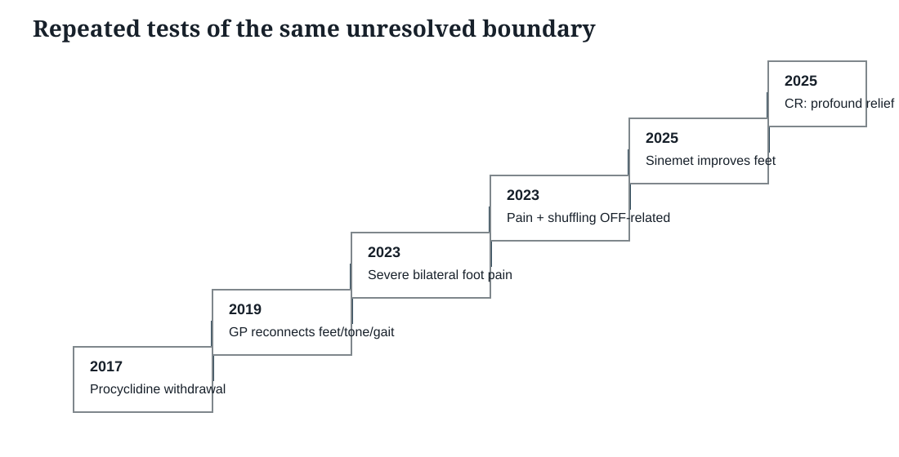

2017 → 2025
Repeated tests of the same unresolved boundary
These events do not prove one exclusive mechanism. Their evidential function is narrower: each bears upon a relationship that was already unresolved and contested in 2017.

2017 — Procyclidine withdrawal. Contemporaneous patient evidence records major improvement on treatment and deterioration including feet, tension and gait during withdrawal. E009
2019 — GP reconnection. Feet issues are recorded in relation to increased tone and abnormal gait relating to Parkinson's disease. E010
2023 — severe bilateral pain. An urgent GP referral records burning in both feet/lower legs and recalls pain settling with better Parkinson's control in an earlier episode. E014
2023 — OFF-related. Movement Disorders documentation states leg pain and shuffling appear OFF-related. E013
2025 — Sinemet state. Neurology records that the feet feel better once Sinemet acts and introduces overnight controlled release. E015
2025 — profound relief. The complaint response accepts that Sinemet CR provided profound current relief. E016
Where is the global reconstruction?
The audit question is not whether local treatment changed. It is where the original structural–neurological formulation was explicitly reset against the accumulating evidence.